Configure your AWS cross-account IAM role (legacy)
Important
This documentation has been retired and might not be updated. The products, services, or technologies mentioned in this content are no longer supported. To view current admin documentation, see Manage your Databricks account.
Note
This article describes how to configure a cross-account IAM role using the legacy account console. All new Databricks accounts and most existing accounts should use Create an IAM role for workspace deployment.
To set up Databricks you must grant Databricks permission to access an AWS account in which it will create and manage compute and VPC resources. Databricks can use either a cross-account role or access keys. This article describes how to configure Databricks to use either method. For both methods you configure settings in both the AWS Console and the Databricks account console.
Important
Although both roles and access keys are supported, Databricks strongly recommends that you use a cross-account role to enable access to your AWS account.
You can change the AWS account. However, changing the AWS account causes cluster termination, VPC deletion, and the invalidation of any instance profiles you have set up.
Changes to the AWS account or to the type and configuration of AWS permissions can result in a downtime of 2-10 minutes.
Use a cross-account role
This section describes how to configure access to an AWS account using a cross-account role.
Step 1: Configure Databricks to use a cross-account role
As the Databricks account owner, log in to the account console.
Click the AWS Account tab.
Select the Deploy to AWS using Cross Account Role radio button.
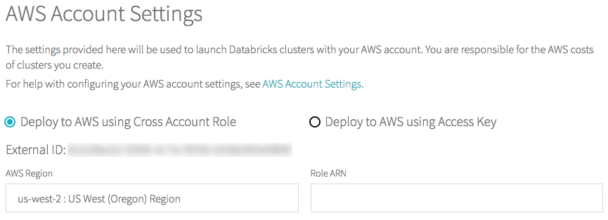If this is the first time you are configuring the account, in the AWS Region drop-down, select an AWS region.
Copy the External ID.
Step 2: Create a cross-account role and an access policy
In the AWS Console, go to the IAM service.
Click the Roles tab in the sidebar.
Click Create role.
In Select type of trusted entity, click the Another AWS account tile.
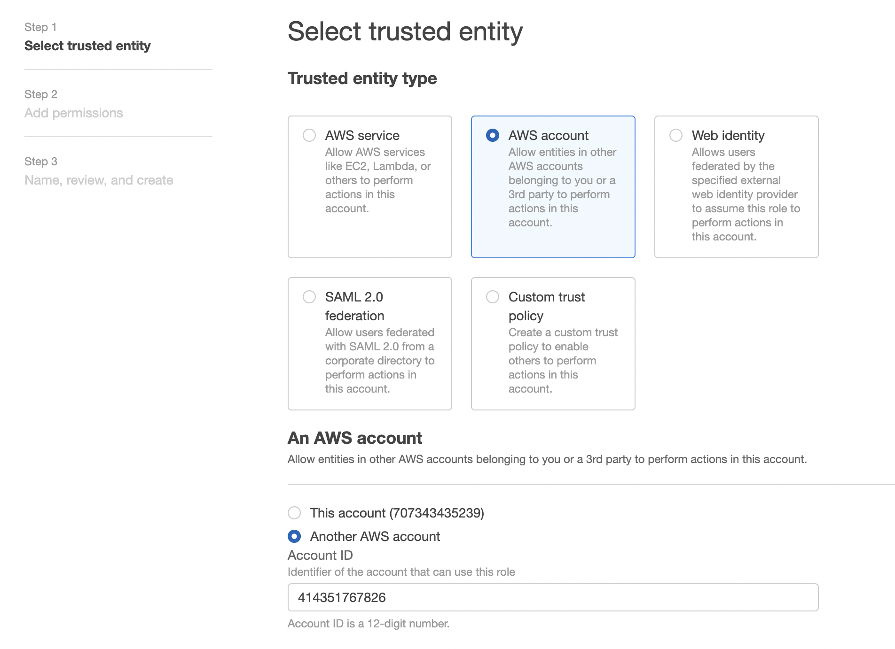In the Account ID field, enter the Databricks account ID
414351767826.Select the Require external ID checkbox.
In the External ID field, paste the Databricks External ID you copied in Step 1.
Click the Next: Permissions button.
Click the Next: Tags button.
Click the Next: Review button.
In the Role name field, enter a role name.
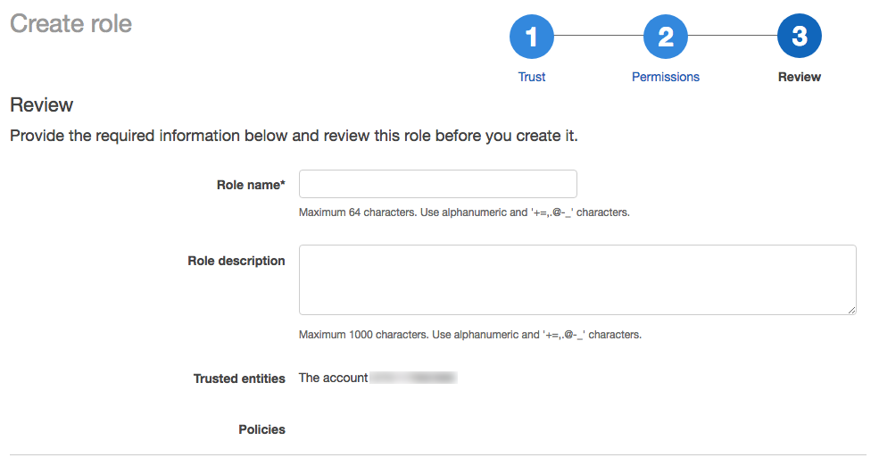Click Create role. The list of roles displays.
In the list of roles, click the role you created.
Add an inline policy.
On the Permissions tab, click Add inline policy.

In the policy editor, click the JSON tab.

Paste this access policy into the editor:
{ "Version": "2012-10-17", "Statement": [ { "Sid": "Stmt1403287045000", "Effect": "Allow", "Action": [ "ec2:AssociateDhcpOptions", "ec2:AssociateIamInstanceProfile", "ec2:AssociateRouteTable", "ec2:AttachInternetGateway", "ec2:AttachVolume", "ec2:AuthorizeSecurityGroupEgress", "ec2:AuthorizeSecurityGroupIngress", "ec2:CancelSpotInstanceRequests", "ec2:CreateDhcpOptions", "ec2:CreateInternetGateway", "ec2:CreateKeyPair", "ec2:CreateRoute", "ec2:CreateSecurityGroup", "ec2:CreateSubnet", "ec2:CreateTags", "ec2:CreateVolume", "ec2:CreateVpc", "ec2:CreateVpcPeeringConnection", "ec2:DeleteInternetGateway", "ec2:DeleteKeyPair", "ec2:DeleteRoute", "ec2:DeleteRouteTable", "ec2:DeleteSecurityGroup", "ec2:DeleteSubnet", "ec2:DeleteTags", "ec2:DeleteVolume", "ec2:DeleteVpc", "ec2:DescribeAvailabilityZones", "ec2:DescribeIamInstanceProfileAssociations", "ec2:DescribeInstanceStatus", "ec2:DescribeInstances", "ec2:DescribePrefixLists", "ec2:DescribeReservedInstancesOfferings", "ec2:DescribeRouteTables", "ec2:DescribeSecurityGroups", "ec2:DescribeSpotInstanceRequests", "ec2:DescribeSpotPriceHistory", "ec2:DescribeSubnets", "ec2:DescribeVolumes", "ec2:DescribeVpcs", "ec2:DescribeVpcAttribute", "ec2:DescribeNetworkAcls", "ec2:DescribeNatGateways", "ec2:DescribeInternetGateways", "ec2:DetachInternetGateway", "ec2:DisassociateIamInstanceProfile", "ec2:ModifyVpcAttribute", "ec2:ReplaceIamInstanceProfileAssociation", "ec2:RequestSpotInstances", "ec2:RevokeSecurityGroupEgress", "ec2:RevokeSecurityGroupIngress", "ec2:RunInstances", "ec2:TerminateInstances" ], "Resource": [ "*" ] }, { "Effect": "Allow", "Action": [ "iam:CreateServiceLinkedRole", "iam:PutRolePolicy" ], "Resource": "arn:aws:iam::*:role/aws-service-role/spot.amazonaws.com/AWSServiceRoleForEC2Spot", "Condition": { "StringLike": { "iam:AWSServiceName": "spot.amazonaws.com" } } } ] }
Click Review policy.
In the Name field, enter a policy name.
Click Create policy.
In the role summary, copy the Role ARN.
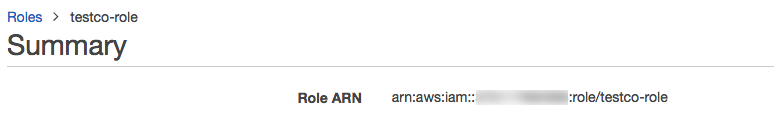
Step 3: Configure the cross-account role in your Databricks account
In the Databricks account console, return to the AWS Account tab.
In the Role ARN field, paste the Role ARN you copied in Step 2.
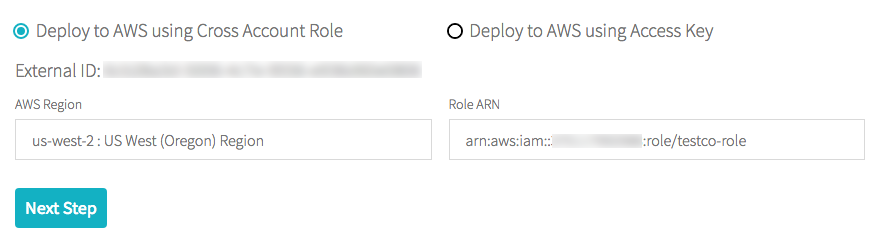Click Next Step. If you are changing the authentication method rather than configuring your authentication for the first time, this button is labeled Apply Changes.
Warning
If you are changing the authentication method and you provide a different AWS account ID than was used to originally set up the account, a warning displays about the effect of that change, including cluster termination, VPC deletion, and the invalidation of any instance profiles you have set up. To proceed, click Change AWS Account.
Use access keys
This section describes how to configure access to an AWS account using access keys.
Step 1: Create an access policy and a user with access keys
In the AWS Console, go to the IAM service.
Click the Policies tab in the sidebar.
Click Create policy.
In the policy editor, click the JSON tab.
Paste this access policy into the editor:
{ "Version": "2012-10-17", "Statement": [ { "Sid": "Stmt1403287045000", "Effect": "Allow", "Action": [ "ec2:AssociateDhcpOptions", "ec2:AssociateIamInstanceProfile", "ec2:AssociateRouteTable", "ec2:AttachInternetGateway", "ec2:AttachVolume", "ec2:AuthorizeSecurityGroupEgress", "ec2:AuthorizeSecurityGroupIngress", "ec2:CancelSpotInstanceRequests", "ec2:CreateDhcpOptions", "ec2:CreateInternetGateway", "ec2:CreateKeyPair", "ec2:CreateRoute", "ec2:CreateSecurityGroup", "ec2:CreateSubnet", "ec2:CreateTags", "ec2:CreateVolume", "ec2:CreateVpc", "ec2:CreateVpcPeeringConnection", "ec2:DeleteInternetGateway", "ec2:DeleteKeyPair", "ec2:DeleteRoute", "ec2:DeleteRouteTable", "ec2:DeleteSecurityGroup", "ec2:DeleteSubnet", "ec2:DeleteTags", "ec2:DeleteVolume", "ec2:DeleteVpc", "ec2:DescribeAvailabilityZones", "ec2:DescribeIamInstanceProfileAssociations", "ec2:DescribeInstanceStatus", "ec2:DescribeInstances", "ec2:DescribePrefixLists", "ec2:DescribeReservedInstancesOfferings", "ec2:DescribeRouteTables", "ec2:DescribeSecurityGroups", "ec2:DescribeSpotInstanceRequests", "ec2:DescribeSpotPriceHistory", "ec2:DescribeSubnets", "ec2:DescribeVolumes", "ec2:DescribeVpcs", "ec2:DetachInternetGateway", "ec2:DisassociateIamInstanceProfile", "ec2:ModifyVpcAttribute", "ec2:ReplaceIamInstanceProfileAssociation", "ec2:RequestSpotInstances", "ec2:RevokeSecurityGroupEgress", "ec2:RevokeSecurityGroupIngress", "ec2:RunInstances", "ec2:TerminateInstances" ], "Resource": [ "*" ] }, { "Effect": "Allow", "Action": [ "iam:CreateServiceLinkedRole", "iam:PutRolePolicy" ], "Resource": "arn:aws:iam::*:role/aws-service-role/spot.amazonaws.com/AWSServiceRoleForEC2Spot", "Condition": { "StringLike": { "iam:AWSServiceName": "spot.amazonaws.com" } } } ] }
Click Review policy.
In the Name field, enter a policy name.
Click Create policy.
Click the Users tab in the sidebar.
Click Add User.
Enter a user name.
For Access type, select Programmatic access.
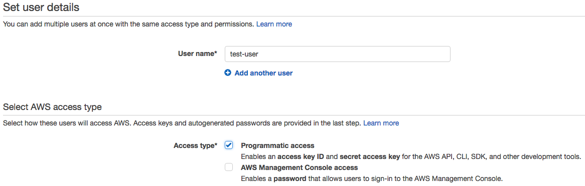Click Next Permissions.
Select Attach existing policies directly.
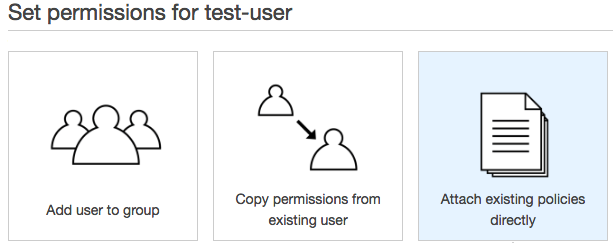In the Policy type filter, select Customer managed.
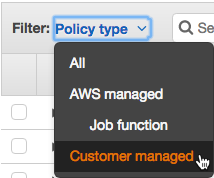Select the checkbox next to the policy you created.
Click Next Review.
Click Create user.
Click Download .csv, downloads a CSV file containing the access key ID and secret access key you need for the next step.
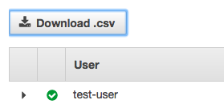Click Close.
Step 2: Configure access keys in your Databricks account
As the Databricks account owner, log in to the account console.
Click the AWS Account tab.
Select the Deploy to AWS using Access Key radio button. The process varies depending on whether you are configuring your authentication for the first time or changing the authentication method.
First
In the AWS Region drop-down, select an AWS region.
In the AWS Account ID field, enter your AWS account ID. See AWS Account Identifiers for information on how to find your account ID.
Enter your access key ID and secret access key from the CSV file you downloaded in Step 1 into their respective fields.
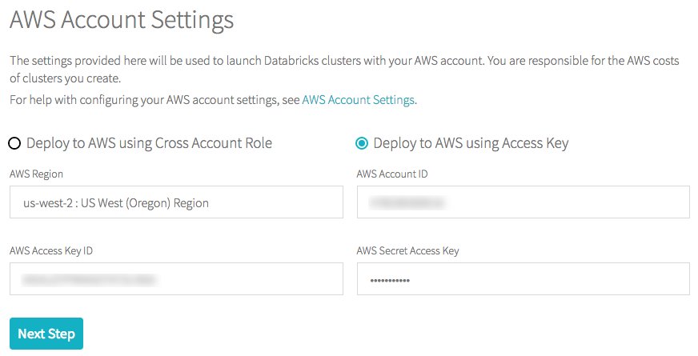Click Next Step.
Change
Click the Edit AWS Settings button.
Optionally enter a new AWS account ID.
Enter your access key ID and secret access key from the CSV file you downloaded in Step 1 into their respective fields.
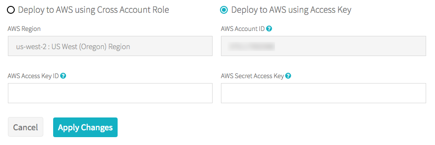Click Apply Changes.
Warning
If you provide a different AWS account ID than used to originally set up the account, a warning displays about the effect of that change, including cluster termination, VPC deletion, and the invalidation of any instanceprofiles you have set up. To proceed, click Change AWS Account.
Troubleshooting
Check that AWS account billing information is complete. If it is not, Databricks may not be able to validate credentials.
To confirm that there are no issues with your AWS account, verify that you can launch an EC2 instance.
It can take a minute or two for IAM to propagate the permissions set on the IAM role or user. If validation fails, retry the configuration in the Databricks account.
Next step
The first time you set up your account you must also configure your AWS storage. See Configure AWS storage (legacy).